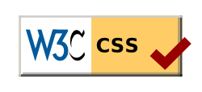

About this Service
What is this? Do I need it?
The W3C CSS Validation Service is a free software created by the W3C to help Web designers and Web developers check Cascading Style Sheets (CSS). It can be used on this free service on the web, or downloaded and used either as a java program, or as a java servlet on a Web server.
Do you need it? If you are a Web developer or a Web designer, this tool will be an invaluable ally. Not only will it compare your style sheets to the CSS specifications, helping you find errors, typos, or incorrect uses of CSS, it will also tell you when your CSS poses some risks in terms of usability.
The explanation above is incomprehensible! Help!
Most documents on the Web are written in a computer language called HTML. This language can be used to create pages with structured information, links, and multimedia objects. For color, text, and layout, HTML uses a styling language called CSS, short for "Cascading Style Sheets". What this tool does is help people authoring CSS check, and fix if necessary, their CSS Style Sheets.
So, this is the authority on what is correct CSS and what isn't?
No. It is a helpful and reliable tool, but a software tool, and like every software, it has some bugs and issues (and legacy bugs). The actual reference on Cascading Style Sheets are the CSS Specifications.
What does “Valid CSS” mean? Which version of CSS does this validator use?
According to the CSS 2.1 Specification:
The validity of a style sheet depends on the level of
CSS used for the style sheet. valid CSS 2.1 style sheet must be written according to the grammar of CSS 2.1.
Furthermore, it must contain only at-rules, property names, and property values defined in this specification.
By default, this validator checks style sheets against the grammar, properties and values defined in the CSS 2.1 specification, but other CSS profiles can be checked against by using the options.
CSS is an evolving language, and it is considered by many that “CSS” is a single grammar (the one defined in the latest specification) with a number of properties and acceptable values defined in various profiles.In a future version of this validator, the default behavior may be to check style sheets against that latest “CSS grammar” and the cloud of all standardized CSS properties and values.
How much does it cost?
Nothing. The service is free. The source isopen and you are free to download it, use it, modify it, distribute it, and more. If you really like it, you are welcome to join the project or donate to W3C via the W3C supporters program, but nobody forces you to.
Who wrote this tool? Who maintains it?
W3C maintains and hosts the tool, thanks to the work and contributions by W3C staff, volunteer developers and translators. See the credits and acknowledgments page for details.You too can help.
Can I help?
Of course. If you are a java programmer, you can help the CSS Validator project by checking out the code, adopting and fixing bugs & legacy bugs, or helping build new features.
But you do not need to be a coder to help build and maintain this tool: you can also help improve the documentation, participate in translating the validator in your language, or subscribe to the mailing-list and discuss about the tool or help other users.
Any other question?
If you have any question regarding CSS or the CSS validator, check out the available mailing-lists and forums. But before that, make sure that your question or comment is not covered already by the CSS Validator FAQ document.
Developers' corner
What is the CSS Validator written in? Is the source available somewhere?
The W3C CSS validator is written using the java language, and yes, its source is available, using Git: you can browse the code online or follow the instructions there to download the whole source tree. For a quick overview of the classes used in the CSS Validator code, check out the README file.
Can I install and run the CSS Validator myself?
It is possible to download and install the CSS validator, and to run it either from the command line, or as a servlet in a Web server. Read the instructions for installation and use.
Can I build an application upon this validator? Is there an API?
Yes, and yes. The CSS Validator has a (RESTful) SOAP interface which should make it reasonably easy to build applications (Web or otherwise) upon it. Good manners and respectful usage of shared resources are of course customary: make sure your applications sleep() between calls to the validator, or install and run your own instance of the validator.
| HTML5 | CSS3 |
|---|---|
| HTML is the language for describing the structure of Web pages. | CSS is the language for describing the presentation of Web pages, including colors, layout, and fonts. |
| Publish online documents with headings, text, tables, lists, photos, etc. | It allows one to adapt the presentation to different types of devices, such as large screens, small screens, or printers. |
| Retrieve online information via hypertext links, at the click of a button. | CSS is independent of HTML and can be used with any XML-based markup language. |
| Design forms for conducting transactions with remote services, for use in searching for information, making reservations, ordering products, etc. | The separation of HTML from CSS makes it easier to maintain sites, share style sheets across pages, and tailor pages to different environments. |
| Include spread-sheets, video clips, sound clips, and other applications directly in their documents. | This is referred to as the separation of structure (or: content) from presentation. |